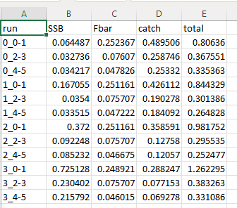
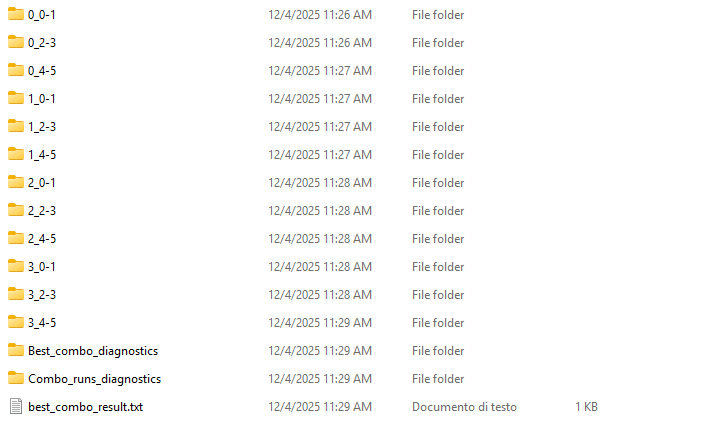

source("C:\\Users\\Nazareno Campioni\\Desktop\\ALADYM_tuning_utils\\adjust_M_wrt_tr.R")
source("C:\\Users\\Nazareno Campioni\\Desktop\\ALADYM_tuning_utils\\age_split_Fbar.R")
source("C:\\Users\\Nazareno Campioni\\Desktop\\ALADYM_tuning_utils\\tuning_config_creation.R")ALADYM_tuning_tutorial
Introduction
The tuning module described here is a targeted extension of BEMTOOL and operates exclusively on the ALADYM biological component. It does not modify, calibrate, or optimise any economic, effort-allocation, or management modules of BEMTOOL. Its sole purpose is to automate the calibration of selected ALADYM input parameters against external stock-assessment outputs.
Specifically, the tuning workflow:
runs ALADYM repeatedly using predefined configuration files,
varies a controlled subset of biological parameters (e.g. Tr, Fbar range, and separately the selectivity parameters),
evaluates model outputs against assessment-derived time series,
identifies parameter combinations that minimise a predefined error metric.
This procedure replaces manual, GUI-driven trial-and-error calibration with a deterministic, script-driven process that is fully reproducible and traceable.
The tuning framework is designed to be used after a standard BEMTOOL/ALADYM setup is already functional. It assumes that:
ALADYM runs correctly for a single configuration,
input data are internally consistent,
assessment outputs (SSB, Fbar, catches) are available as reference series.
This tuning module is not a replacement for the standard BEMTOOL workflow. It is a calibration step intended to improve the biological consistency of ALADYM before running management or bioeconomic scenarios. No knowledge of BEMTOOL’s economic or management scenario modules is required to apply the tuning, in that only ALADYM parameters are tuned.
The approach is a structured grid search: no optimisation algorithm is employed. The procedure is diagnostic and comparative, not predictive.
For a full description of BEMTOOL structure, data requirements, and installation, refer to the official tutorial: BEMTOOL Tutorial.
Installation of BEMTOOL and ALADYM must be completed following that guide before attempting any tuning procedure described below.
How to install ALADYM tuning
Installation and setup of the tuning framework
The tuning workflow is distributed as a collection of R scripts, including the main execution files and the utility scripts responsible for generating configuration files. All these scripts must be downloaded together from the GitHub repository:
ADD REPOSITORY HERE
The repository contains:
the Tr–Fbar tuning script,
the selectivity tuning script,
utility scripts used to create and modify configuration files (e.g. mortality adjustments, age regrouping, configuration writers).
After downloading or cloning the repository, open the configuration-generation scripts, ALADYM_tuning_main_config.R and ALADYM_tuning_selectivity_main_script.R, and update the internal source() paths so that they point to the correct local location of the utility scripts.
That is, replace hard-coded paths
and
source("C:\\Users\\Nazareno Campioni\\Desktop\\ALADYM_tuning_selectivity_utils\\create_sel_combinations.R")
source("C:\\Users\\Nazareno Campioni\\Desktop\\ALADYM_tuning_selectivity_utils\\create_sel_configs.R")with paths corresponding to your local directory structure, for example:
source("path/to/your/repository/utils/adjust_M_wrt_tr.R")
source("path/to/your/repository/utils/age_split_Fbar.R")
source("path/to/your/repository/utils/tuning_config_creation.R")All utility scripts must be reachable from the main script via correct relative or absolute paths. If these paths are not updated, configuration files will not be generated correctly.
Installation procedure
Before using the tuning framework, BEMTOOL must already be installed and fully operational.
To install the tuning framework:
Download the GitHub repository either by cloning it using git clone
or by downloading the repository as a ZIP archive and extracting it locally. Place the extracted folder in a working directory of your choice. The folder does not need to overwrite or replace the BEMTOOL installation; it operates externally.
Open the main configuration-generation script and ensure all internal source() paths correctly reference the utility scripts.
Execute the configuration-generation script to create the Tr–Fbar (or selectivity) configuration files.
Open
ALADYM_tuning.R, orALADYM_tuning_selectivity.R, and run the calibration procedure by executing:
source("ALADYM_tuning.R")No additional installation steps are required. The tuning scripts rely on the existing BEMTOOL/ALADYM installation and operate by generating and executing alternative ALADYM configuration files, provided that internal paths are correctly defined.
Overview of the tuning workflow
The tuning process follows a fixed and sequential workflow designed to ensure consistency and reproducibility across all simulations. First, the user defines the ranges of the parameters to be explored, specifying the discrete values that will be tested during calibration. Based on these ranges, the tuning scripts automatically generate multiple ALADYM configuration files, each representing a unique parameter combination derived from the baseline setup.
ALADYM is then executed in batch mode for every generated configuration, with no manual intervention required during the simulation phase. Once all runs are completed, the relevant simulation outputs are systematically extracted and aligned with the corresponding assessment data. These simulated results are compared against observations to quantify discrepancies across time and indicators.
For each parameter combination, a numerical score is computed to summarise model performance. The combination that minimises this score is identified and stored as the best-performing solution. Finally, the tuning framework produces diagnostic plots and summary tables that allow the user to evaluate model behaviour, assess trade-offs, and verify the performance of the selected parameter set.
The tuning procedure is deliberately restricted to a defined subset of ALADYM biological parameters, ensuring that calibration targets only the processes of interest.

Figure 1 - Conceptual overview of the ALADYM tuning framework.
Specifically, the tuning process is a two-stage process. In Stage 1, the biological parameters of recruitment time Tr and the age range over which fishing mortality is averaged Fbar are tuned. Once the best combination is found, this is used in Stage 2 to tune the fleet- and gear-specific selectivity parameters. This stage evaluates both stock-level and fleet-level consistency.
Note that the stages are executed sequentially, not jointly.
Data preparation
BEMTOOL operates in a multi-species, multi-fleet framework where landings, effort and biological inputs can coexist within a common modelling structure. ALADYM, in contrast, is species-specific. Each ALADYM run represents a single stock, even if multiple fleet segments exploit it. This structural difference has direct implications for input data preparation.
For ALADYM tuning, landings and effort files must be provided separately for each species. Even if the same fleet segments operate across species, the corresponding catch-at-age, total landings, effort series and biological parameters must be organised in species-dedicated input files. A configuration prepared for European hake cannot be reused directly for red mullet or deep-water rose shrimp, because growth, mortality, maturity and selectivity structures are stock-dependent.
Consequently:
Each species requires its own ALADYM configuration file.
Each species requires its own landings and effort input files formatted according to ALADYM specifications.
Biological inputs (e.g. M-at-age, growth parameters, maturity ogives, selectivity) must be species-specific.
The required Excel templates and example input files can be found here:
These files illustrate the correct ALADYM format and differ from the standard BEMTOOL input structure. Users should not attempt to reuse BEMTOOL landings files directly without restructuring them into the species-specific ALADYM format.
In practice, this means that tuning must be conducted separately for each stock. The workflow (generation of configurations, automated batch runs, score computation and diagnostics) remains identical, but all input data must be prepared independently for each species.
Tr-Fbar tuning
The Tr–Fbar tuning explores alternative combinations of the recruitment timing parameter Tr and the age range used to compute mean fishing mortality Fbar. All other biological and fleet parameters are held fixed. The goal is to identify the Tr–Fbar combination that minimises the discrepancy between ALADYM outputs and stock assessment time series.
Input data requirements
After installation of the ALADYM tuning software, a baseline ALADYM configuration must be prepared. This baseline configuration is the structural reference from which all tuning combinations are generated. Every Tr–Fbar configuration produced by the tuning scripts is a direct modification of this baseline.
Several constraints are critical.
Natural mortality (M) files must start at age 0. Any offset in age indexing will cause misalignment between biological processes and assessment data, leading to error calculations.
Missing values in all configuration files must be encoded as NAN, not NA. ALADYM is not NA-aware. Using NA leads to type coercion, failed reads, or numerical propagation of missing values - NAN is explicitly handled by the model and by the tuning scripts.
The ALADYM configuration file used here is not the same as the BEMTOOL configuration file. BEMTOOL wraps ALADYM but applies additional preprocessing and abstractions. The tuning workflow operates directly on ALADYM inputs. A template ALADYM configuration file adapted for tuning is provided here.
Example ALADYM configuration file.Finally, the simulation period defined in the configuration must match exactly the years available in the assessment time series used for calibration. No extrapolation or truncation is performed automatically.
Generation of Tr–Fbar combinations
Tr–Fbar tuning is based on a grid search approach. The parameter space is discretised into a finite set of Tr values and Fbar age ranges, and ALADYM is run once for each possible combination.
The generation of parameter combinations is handled by the script:
ALADYM_tuning_main_config.R
This script reconstructs all mortality-related inputs so that each ALADYM run is internally consistent with the selected Tr–Fbar combination. In practice, the script performs the following operations.
It first reads a baseline ALADYM configuration file located in C:\INPUT\ALADYM. The script then defines the vectors of Tr values and Fbar age ranges to be explored and builds the full Cartesian product of these parameters.
For each Tr–Fbar combination, the script automatically generates three classes of files:
M files, truncated or shifted so that natural mortality starts at the specified Tr value.
Z files, recalculated to reflect both the selected age-grouping criterion for Fbar and the current Tr value.
ALADYM configuration files, updated so that they reference the correct M and Z files associated with that specific combination.
All generated configuration files differ from the baseline only in the Tr definition, the Fbar age range, and the mortality file paths. Every other parameter and model setting is inherited unchanged from the baseline configuration.
Note, the script assumes the following directory structure and requirements:
The original baseline ALADYM configuration file must be located in
C:\INPUT\ALADYM.Species-specific M and F input files must be stored in
C:\INPUT\ALADYM\species_folder.
If fishing mortality at age files are not available, the parameters F_at_age_F and F_at_age_M must be set to “None” in the baseline configuration. In this case, an Fbar_assessment file must be provided. All Z values will then be computed internally from the Fbar assessment data for each Tr–Fbar combination. This can be seen in the following example code.
## paths
# input path - main folder where we can find M, F and config_file
ip <- "C:\\INPUT\\ALADYM"
# output path - where you want to save the output (usually C:\INPUT\ALADYM)
op <- "C:\\INPUT\\ALADYM"
# species folder - used for M and F files
species_folder <- "MUT1718"
# are there different M files for males and females?
M_different <- TRUE
## set the M files names -> make sure these start from age = 0
# sex-specific files?
M_male <- "M_MUT_M.csv"
M_female <- "M_MUT_F.csv"
# instead, if they have the same file:
M_file <- "M_MUT.csv"
## if F_at_age files exist
F_at_age_M <- "F_at_age_MUT_M.csv"
F_at_age_F <- "F_at_age_MUT_F.csv"
Fbar_assessment <- "None"
# otherwise, if there is only an Fbar file coming from the assessment
# F_at_age_M <- "None"
# F_at_age_F <- "None
# Fbar_assessment <- "Fbar_assessment_MUT.csv"
## set initial configuration file -> must live in C:\INPUT\ALADYM
## make sure that NA values are specified as NAN (needed for the splitting)
configuration <- "aladym_MUT_GSA17_18.csv"
## set tr
tr = c(0, 1, 2, 3)
## set F_range over which to calculate Fbar, eg: list(c(0,3),c(1,4))
# if you only have Fbar from assessment, set F_range = None
F_range = list(c(0,1),c(2,3),c(4,5))
# F_range = "None"
## time series
ts = c(2004:2024)
## species
spe = 'MUT'Example of input paths for the creation of different ALADYM configuration files.All generated files are written automatically to C:\INPUT\ALADYM. The naming convention encodes the Tr value and the Fbar age range directly in the filename, allowing each simulation to be uniquely identified and unambiguously traced back to its parameter values.
Two examples of the naming convention are as follows:
config_run_0_1-3.csvmeans the configuration file considerstr = 0andFbar = (1-3);config_run_0_assess.csvmeans the configuration file considerstr = 0and uses theFbarrange used in the assessment.
Once ALADYM_tuning_main_config.R has completed execution, no further manual editing of M files, Z files, or configuration files is required.
Running the Tr–Fbar tuning
Once all Tr–Fbar configuration files have been generated, the tuning phase is launched by clicking on the source button in the file
ALADYM_tuning.R.
This script operates the full calibration workflow. It iterates sequentially over all Tr–Fbar configuration files created in the previous step by launching ALADYM in batch mode for each configuration without requiring user interaction.
For every Tr–Fbar combination, the script extracts annual time series of spawning stock biomass (SSB), Fbar, and total catch from the ALADYM outputs, which are then compared against the corresponding assessment data. Relative errors are computed, and a scalar score is calculated for each combination as the sum of mean squared relative errors across all indicators (see next section).
Outputs and diagnostics
The calibration score is defined as the sum of mean squared relative errors between simulated and assessment time series for SSB, Fbar, and total catch. For each indicator \(X\), the relative error is computed as
\[ Err_t = \frac{X_t^{sim} - X_t^{obs}}{X_t^{sim}}, \] and the total score is
\[ Score = \frac{1}{T} \sum_{t=1}^T (Err_t^{SSB})^2 + \frac{1}{T} \sum_{t=1}^T (Err_t^{Fbar})^2 + \frac{1}{T} \sum_{t=1}^T (Err_t^{Catch})^2. \] The use of squared relative errors ensures scale-independence across indicators with different magnitudes and penalises large deviations more strongly than small ones.
All results are accumulated into a single calibration table that links each Tr–Fbar combination to its diagnostic metrics and overall score, found in the Combo_runs_diagnostics folder.

Figure 2 - Calibration table.
In parallel, the script creates a dedicated output folder for each parameter combination. Each folder contains the full set of diagnostic plots and intermediate results associated with that specific run, allowing post hoc inspection of individual simulations.
At the end of the tuning process, the script identifies the Tr–Fbar combination with the lowest total score. This best-performing configuration is recorded in a plain text file that reports the selected Tr value, Fbar age range, and associated score. In addition, two summary output directories are produced: one containing the diagnostics for all tested combinations, and a second containing only the diagnostics associated with the best-performing configuration.

Figure 3 - Example of folders and files created after ALADYM tuning is complete.
All output folders and files generated by ALADYM_tuning.R are written to the same directory in which the tuning script lives. No automatic cleanup is performed. To maintain an organised project structure, it is recommended to manually create a species-specific folder and move all tuning outputs into that location once the procedure has completed, as shown below:

Figure 4 - Example of species-specific folders to cleanup the repository.
Selectivity tuning
Selectivity tuning is performed only after the Tr–Fbar tuning stage has converged. The optimal Tr–Fbar combination is treated as fixed input. Selectivity tuning explores alternative gear-specific selectivity parameterisations while holding recruitment timing, fishing mortality structure, and all biological parameters constant. The objective is to improve fleet-specific catch dynamics without destabilising stock-level indicators.
Input data requirements
The baseline ALADYM configuration used for selectivity is the same as the one used for the Tr-Fbar tuning with the exception that the Tr and Fbar values must now be set to the identified, best performing Tr-Fbar combination. Consequently, the specified M file should be the one starting at the selected Tr value. Again, we remind that NA values must be encoded as NAN.
Generation of selectivity configurations
Selectivity configuration generation is more structured than Tr–Fbar tuning because BEMTOOL gives the possibility to choose among six functions for selectivity. Each function is associated therefore to a different subset of parameters.
The tuning framework does not attempt to switch between selectivity functions: the selectivity type for each fleet segment is fixed in the original selectivity Excel file and remains unchanged throughout tuning. What is explored are alternative values of the parameters associated with that specific function. This is handled via
ALADYM_tuning_selectivity_main_script.R.
The configuration-generation step begins by defining a mapping between selectivity types and the parameters they are allowed to use. This mapping is implemented as a hash map where:
Each key represents a selectivity type identifier.
Each value is the set of parameter names that are active for that function.
library(hash)
# -----------------------------------------------------
# Define selectivity dictionary:
# maps selectivity type -> parameters used
# -----------------------------------------------------
selectivity_id <- hash()
selectivity_id[["1"]] <- list(c("param1", "param2"), c(1, 2))
selectivity_id[["2"]] <- list(c("param1", "param2", "param3"), c(1, 2, 3))
selectivity_id[["3"]] <- list(c("param1", "param2"), c(1, 2))
selectivity_id[["4"]] <- list(c("param1", "param2"), c(1, 2))
selectivity_id[["5"]] <- list(c("param1", "param2", "param3", "param4", "param5"),
c(1, 2, 3, 4, 5))
selectivity_id[["6"]] <- list(c("param1", "param2", "param3"), c(1, 2, 3))
# -----------------------------------------------------
# Define selectivity parameters combinations per selectivity type
# -----------------------------------------------------
# sel 1
p11 <- c(10, 15, 20) #seq(15, 20)
p12 <- c(5, 6) #seq(3, 7)
# sel 2
p21 <- c(10, 15)
p22 <- c(7, 8)
p23 <- c(8, 10)
# sel 3
p31 <- c(20, 25)
p32 <- c(10, 15)
# sel 4
p41 <- c(12, 25)
p42 <- c(6, 7)
p43 <- c(7, 8)
# sel 5
p51 <- c(12, 25)
p52 <- c(12, 25)
p53 <- c(12, 25)
p54 <- c(12, 25)
p55 <- c(12, 25)
# sel 6
p61 <- c(12, 25)
p62 <- c(10, 20)
p63 <- c(15, 15)
# per-selectivity-type parameters
params_sel <- hash()
params_sel[["1"]] <- list(p11, p12)
params_sel[['2']] <- list(p21, p22, p23)
params_sel[['3']] <- list(p31, p32)
params_sel[['4']] <- list(p41, p42, p43)
params_sel[['5']] <- list(p51, p52, p53, p54, p55)
params_sel[['6']] <- list(p61, p62, p63)Example of how to specify the selectivity parameters range to use in the creation of different ALADYM configuration files.For example, a logistic function may allow only an inflection age and a slope parameter, whereas a dome-shaped function may allow parameters controlling peak age and curvature. Although the input file contains a fixed number of parameter columns, only the parameters listed in the mapping for the selected type are considered active. The remaining parameter slots are ignored during combination generation and remain fixed at their baseline values.
During configuration creation, the script performs the following sequence:
It reads the baseline selectivity file and identifies, for each fleet, the assigned selectivity type.
For each fleet, it retrieves from the hash map the subset of parameters that are valid for that type.
It generates all combinations of the user-defined ranges only for those active parameters.
It reconstructs full selectivity files by substituting alternative parameter values fleet by fleet, while keeping:
the selectivity type unchanged,
all non-active parameters fixed,
all other fleets’ parameters unchanged unless explicitly varied.
The result is a set of complete selectivity configuration files in which every fleet retains its original functional form, and only the allowed parameters are varied. Combinations are therefore selectivity-type-specific and fleet-specific. This structure guarantees that a fleet assigned a logistic function will never receive parameters belonging to a dome-shaped function, and no configuration will mix parameter sets incompatible with the declared selectivity type.
Following the remaining steps of ALADYM_tuning_selectivity_main_script.R will create two folders: one folder named selectivity_combinations containing all combinations of the selectivity-specific parameters is created within the specified species folder, whereas the folder of configurations that specify the path of each selectivity file is created in the folder selectivity_configs_SPE, as shown below.

Figure 5 - Example of selectivity configurations output folders.
These files are then used in batch mode by the selectivity tuning script, which evaluates their performance against stock- and fleet-level observations.
Running selectivity tuning
Once configuration files are generated, the selectivity tuning run is launched in batch mode. For each configuration, ALADYM is executed and the following outputs are extracted:
stock-level indicators (SSB, Fbar, total catch),
fleet-specific annual catches.
Relative errors are computed both at the stock level and at the fleet level. Fleet errors are retained explicitly rather than collapsed immediately, allowing inspection of trade-offs between fleets.
A global score is computed by combining stock-level errors with fleet-level error summaries. The weighting scheme is transparent and can be modified if required.
Outputs and diagnostics
Selectivity tuning produces:
a comprehensive error table with one row per configuration,
fleet-specific error metrics,
diagnostic plots showing simulated versus observed catches for each fleet,
aggregated plots showing all selectivity simulations against observations.
The best-performing configuration is identified based on the defined score criterion, but alternative near-optimal solutions can be inspected to evaluate robustness and fleet trade-offs.